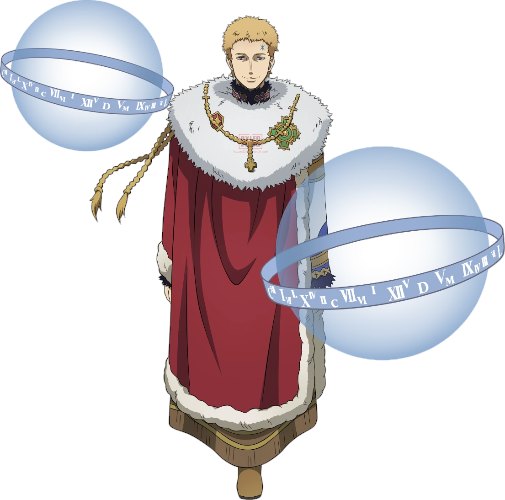
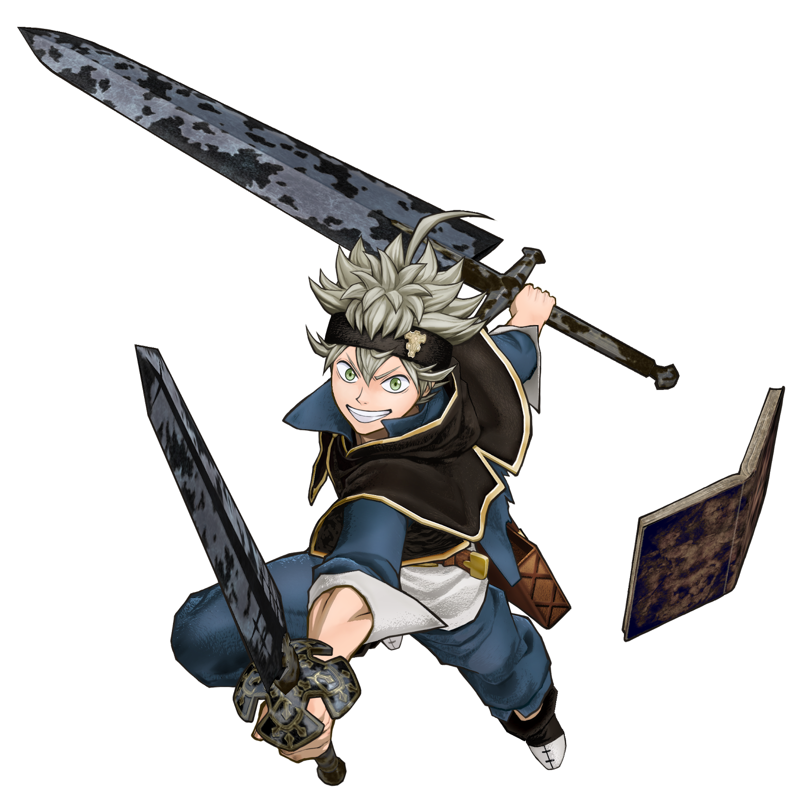
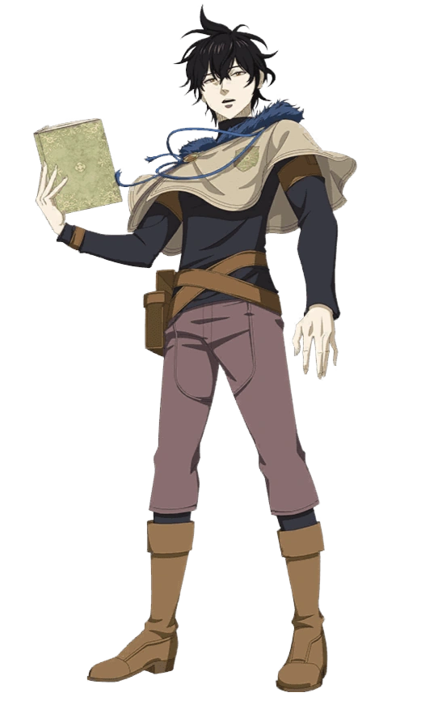

Personagens
Julius Novachrono
Tendo uma personalidade muito próxima a de Astar, Julius é o atual Rei Mago de Clover. Apesar de seu lado infantil, cômico e facilmente impressionável, possui um poder digno de nota e uma confiança louvável em seus cavaleiros.
Asta
Garoto de extrema fibra e determinação que foi criado em meio aos órfãos na Igreja de Clover. Não nasceu com nenhum poder místico, mas nem por isso desiste de seu sonho de se tornar o futuro Rei Mago.
Yami Sukehiro
.png)
Manipulador do elemento “escuridão”, envolvendo sua espada em sombras durante o combate, Yami Sukehiro é o líder do esquadrão do Touro Negro e, por vezes, pode ser bastante intimidador pela forma como trata seus companheiros de equipe, mas está sempre tentando incentivá-los a dar o melhor de si de uma forma ou de outra.
Yuno
Menino de extremo talento para com a magia que cresceu ao lado de Asta. É o segundo protagonista da série e também o maior rival de Asta em sua jornada para se tornar o Rei Mago, uma vez que possui esse mesmo desejo em seu coração.
Contatos